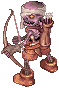
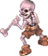
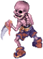
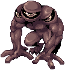
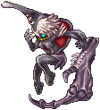

Room of Consciousness
| This quest or instance is repeatable. | ||
|---|---|---|
| Cooldown | Tickets Available | |
|
Resets at 0:00 |
Solo: No limit | Party: No limit |
Overview
| Requirements | |
|---|---|
| Base Level: | 100 |
| Starting Point: | |
| Prerequisite(s): | Banquet of Heroes (Room of Consciousness) |
| Rewards | |
| Experience: | 25,000,000 (Base) and 15,000,000 (Job) |
| Items: | 10  Honor Token Honor Token
|
The Room of Consciousness is part of the Episode 16.1, check out the Banquet for Heroes for more information.
Daily quest
- If it's your first time doing the instance, you can skip to the Walkthrough directly.
- After the cooldown has elapsed, go in the Prontera Castle and talk to Friedrich S. Heine in the Hein room. Select Yes.
Walkthrough
- Go in the Prontera Castle inside your room and speak with Chamberlain Bell. Summon Nillem and he will warp you to the Past Memories of the Royal Family.
- Speak with Nillem again and he will make a Dimension Warper appear. Use it to go back in time.
- Speak with Nillem again to create the instance and then enter the Swaying Space to start the instance.
- Once inside, talk to Fenrir standing near the entrance.
- Move upward and talk to Iris this time.
- You'll have to defeat two waves of mobs near the entrance area. Kill them and then go back Fenrir.
- Renovated Amdarais will start attacking you. He is not very strong, but be careful of his Soul Breaker attack when he chases you.
Its
 Soul Breaker can do over 10.000 damage to a new player. It's a close ranged attack so
Soul Breaker can do over 10.000 damage to a new player. It's a close ranged attack so  Pneuma won't work but
Pneuma won't work but  Safety Wall will.
Safety Wall will.
He's also not a boss-type monster and is Undead. Using Resurrection,
Resurrection,  Yggdrasil Leaf or
Yggdrasil Leaf or  Turn Undead has the potential to one-shot him.
Turn Undead has the potential to one-shot him.
Outside of the first option, the others may ask for a quick adjust in stats to be pulled off (LUK for better chances of it working, DEX/INT for shorter casting times).
You can lure him towards Sarah and Fenrir to take off some of his HP. - Talk to Iris and Bijou will make its first apparition. This is the weak version, a single hit should kill him.
- Talk to Fenrir and the real Bijou will attack you.
You can lure her towards Sarah and Fenrir to take off some of his HP.
Just a slave is more than enough, you don't really need to lure Bijou.
If you die at this part of the instance, Bijou will go back to Full HP and you will be teleported back to the entrance of the map. - Once Bijou is defeated, speak with Iris and she will warp you out of the instance.
- Speak to Mage Nillem outside the instance.
- You can use the portal at the end of the left corridor to access Invaded Prontera.
- If you're doing the daily quest version, speak with Friedrich S. Heine in the Hein room. He will reward you with 10 Honor Token and some experience.
Enemies
| Image | Name | Level | HP | Size / Race / Element |
|---|---|---|---|---|
|  | Enchanted Archer Skeleton | 114 | 10,000 | Medium / Undead / Undead 3 |
|  | Soldier Skeleton | 114 | 10,000 | Medium / Undead / Undead 3 |
|  | Soldier Skeleton | 115 | 10,000 | Medium / Undead / Undead 3 |
|  | Renovated Amdarais | 99 | 9,990,000 | Large / Undead / Undead 1 |
|  | Bijou
|
99 | 10,000,000 | Large / Undead / Undead 4 |
Cards
| Card | Type | Description |
|---|---|---|
| Weapon Card | Long ranged physical damage +10%.
If the user's Base Lv is 100 or higher, additional long ranged physical damage +2%. | |
| Weapon Card | CRIT +9.
If the user's Base Lv is 100 or higher, additional CRIT +1, critical damage +5%. | |
| Armor Card | DEF +10 every refine level. Flee -2 every refine level.
If the user's Base Lv is 100 or higher, MaxHP +500. If equipped with Bijou Card, reduces damage received from Shadow and Ghost property attack by 100%. | |
| Shield Card | ATK +10%, MATK +10%. Immune to Frozen.
If equipped with Renovated Amdarais Card, reduces damage received from Shadow and Ghost property attack by 100%. |